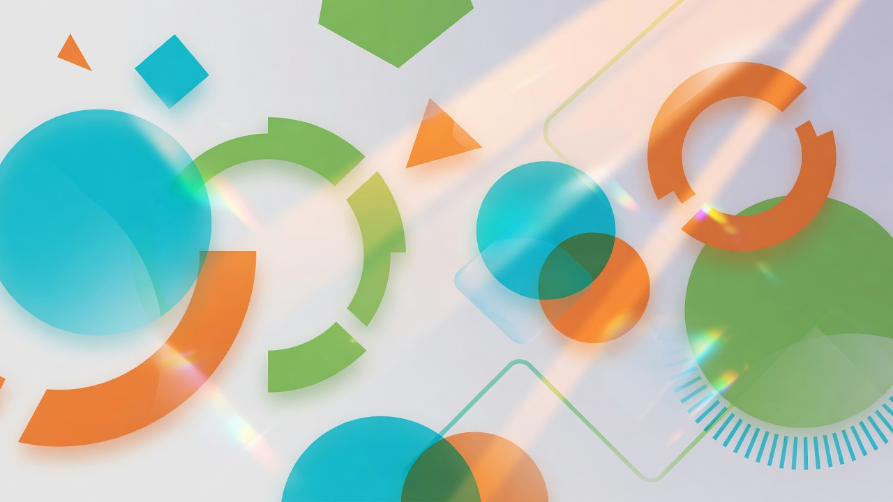

НП Новые люди · кандидат в депутаты
Виктория Голомазова

О себе
Коротко и по делу

Инвестиции, общественные проекты и помощь бизнесу в Китае.
СвязатьсяФокус
Масштабные проекты и «министерство добрых дел»
Спорт
Готовлюсь к нормативу по лыжным гонкам
Проекты
Крупные блоки — что делаю

Студенческий обмен
С гарантией трудоустройства и стажировками

Культурно-деловой центр Китая
Барнаул · Новосибирск · Белокуриха

Русский дом в Сиане
Город-побратим
Прозрачность депутатов
Цифра для быстрых решений на местах

БАС
Беспилотники для гражданских задач

Бизнес с Китаем
Язык + административный ресурс — снимаю барьеры
Партия
Членство — акцент на работе Виктории
Новые люди
Член партии. Акцент сайта — на Виктории; официальная программа партии — по ссылкам.
Связь
Проекты, общественная работа, сотрудничество
Напишите удобным способом — отвечу по существу.
Форма обратной связи
Оставьте сообщение — откроется черновик письма или VK.